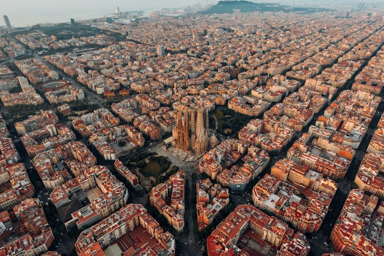
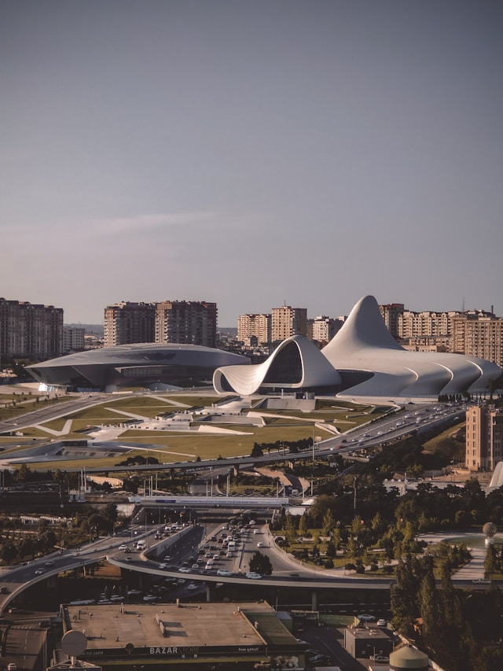
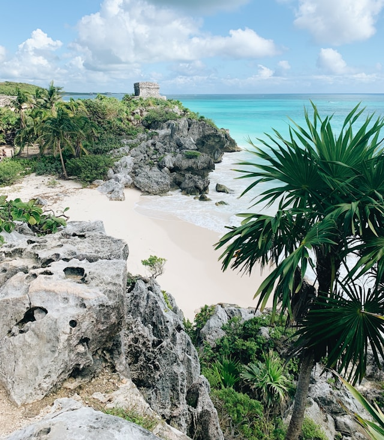

A little about some of the cities I've been to
Paris

Paris, often called the City of Light, is a city that enchants with its timeless elegance and vibrant culture. Strolling along the Seine, you’re greeted by the iconic silhouette of the Eiffel Tower, while the historic charm of Montmartre whispers tales of artists and poets. The aroma of freshly baked baguettes fills the air, inviting you into cozy cafes where Parisians savor their leisurely moments. From the grandeur of the Louvre to the serene beauty of the Luxembourg Gardens, Paris is a symphony of art, history, and romance.
Barcelona
Barcelona is a city where modernist marvels and ancient history coexist harmoniously. Stroll down La Rambla to experience the city's vibrant street life, then marvel at Gaudí's whimsical creations like the Sagrada Família and Park Güell. The Gothic Quarter beckons with its narrow, winding streets and historic charm, while the beaches offer a perfect spot to relax and enjoy the Mediterranean sun. From its world-class cuisine to its lively festivals, Barcelona captivates with its boundless energy and artistic spirit.
Rome

Rome, the Eternal City, is a living museum where every corner tells a story of empires, saints, and artists. The Colosseum and Roman Forum transport you back to the days of gladiators and emperors, while the Vatican City dazzles with the splendor of St. Peter's Basilica and the Sistine Chapel. Wander through charming piazzas, where fountains like the Trevi Fountain enchant visitors, and savor the city's culinary delights in quaint trattorias. Rome's rich history and vibrant culture create an unforgettable tapestry of experiences.3
Baku
Baku, the capital of Azerbaijan, is a city of contrasts where ancient traditions meet futuristic architecture. The historic Old City, a UNESCO World Heritage site, with its winding alleys and ancient landmarks like the Maiden Tower, offers a glimpse into the past. Meanwhile, the Flame Towers and the Heydar Aliyev Center showcase the city’s modern, dynamic spirit. Stroll along the Caspian Sea promenade to enjoy stunning views and vibrant nightlife. Baku's blend of old and new creates a unique and captivating atmosphere.
Tulum
Tulum, nestled on the Caribbean coast of Mexico’s Yucatán Peninsula, is a paradise where natural beauty and ancient history converge. The ruins of the ancient Mayan city overlook pristine beaches with turquoise waters and powdery white sand. Tulum’s eco-chic vibe is evident in its rustic yet stylish beachfront cabanas and wellness retreats. Whether you're exploring the lush jungles, diving into cenotes, or savoring fresh seafood by the shore, Tulum offers a tranquil escape that feels like a slice of paradise.